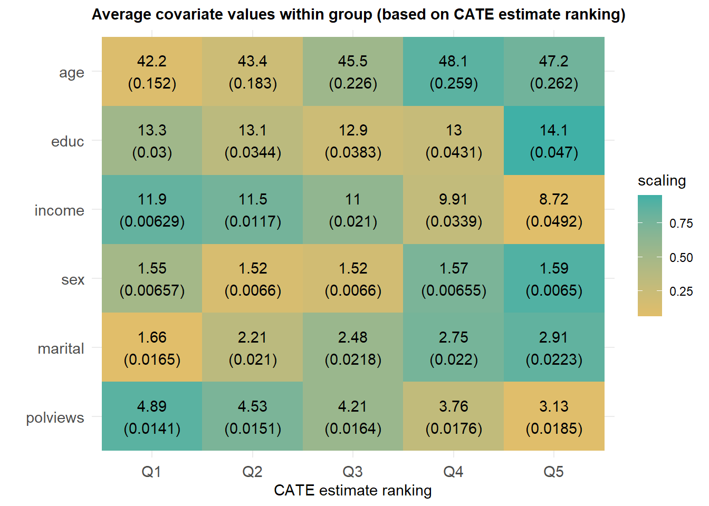

Chapter 20 Double/Debiased ML for Partially Linear IV Model
References:
https://arxiv.org/abs/1608.00060
https://www.amazon.com/Business-Data-Science-Combining-Accelerate/dp/1260452778
The code is based on the book.
20.1 Partially Linear IV Model
We consider the partially linear structural equation model: \[\begin{eqnarray} & Y - D\theta_0 = g_0(X) + \zeta, & E[\zeta \mid Z,X]= 0,\\ & Z = m_0(X) + V, & E[V \mid X] = 0. \end{eqnarray}\]
Note that this model is not a regression model unless \(Z=D\). The model is a canonical model in causal inference, going back to P. Wright’s work on IV methods for estimaing demand/supply equations, with the modern difference being that \(g_0\) and \(m_0\) are nonlinear, potentially complicated functions of high-dimensional \(X\).
The idea of this model is that there is a structural or causal relation between \(Y\) and \(D\), captured by \(\theta_0\), and \(g_0(X) + \zeta\) is the stochastic error, partly explained by covariates \(X\). \(V\) and \(\zeta\) are stochastic errors that are not explained by \(X\). Since \(Y\) and \(D\) are jointly determined, we need an external factor, commonly referred to as an instrument, \(Z\) to create exogenous variation in \(D\). Note that \(Z\) should affect \(D\). The \(X\) here serve again as confounding factors, so we can think of variation in \(Z\) as being exogenous only conditional on \(X\).
The causal DAG this model corresponds to is given by: \[ Z \to D, X \to (Y, Z, D), L \to (Y,D), \] where \(L\) is the latent confounder affecting both \(Y\) and \(D\), but not \(Z\).
20.2 Example
A simple contextual example is from biostatistics, where \(Y\) is a health outcome and \(D\) is indicator of smoking. Thus, \(\theta_0\) is captures the effect of smoking on health. Health outcome \(Y\) and smoking behavior \(D\) are treated as being jointly determined. \(X\) represents patient characteristics, and \(Z\) could be a doctor’s advice not to smoke (or another behavioral treatment) that may affect the outcome \(Y\) only through shifting the behavior \(D\), conditional on characteristics \(X\).
20.3 PLIVM in Residualized Form
The PLIV model above can be rewritten in the following residualized form: \[ \tilde Y = \tilde D \theta_0 + \zeta, \quad E[\zeta \mid V,X]= 0, \] where \[ \tilde Y = (Y- \ell_0(X)), \quad \ell_0(X) = E[Y \mid X] \\ \tilde D = (D - r_0(X)), \quad r_0(X) = E[D \mid X] \\ \tilde Z = (Z- m_0(X)), \quad m_0(X) = E[Z \mid X]. \] The tilded variables above represent original variables after taking out or “partialling out” the effect of \(X\). Note that \(\theta_0\) is identified from this equation if \(V\) and \(U\) have non-zero correlation, which automatically means that \(U\) and \(V\) must have non-zero variation.
20.4 DML for PLIV Model
Given identification, DML proceeds as follows
Compute the estimates \(\hat \ell_0\), \(\hat r_0\), and \(\hat m_0\) , which amounts to solving the three problems of predicting \(Y\), \(D\), and \(Z\) using \(X\), using any generic ML method, giving us estimated residuals \[ \tilde Y = Y - \hat \ell_0(X), \\ \tilde D= D - \hat r_0(X), \\ \tilde Z = Z- \hat m_0(X). \] The estimates should be of a cross-validated form, as detailed in the algorithm below.
Estimate \(\theta_0\) by the the intstrumental variable regression of \(\tilde Y\) on \(\tilde D\) using \(\tilde Z\) as an instrument. Use the conventional inference for the IV regression estimator, ignoring the estimation error in these residuals.
The reason we work with this residualized form is that it eliminates the bias arising when solving the prediction problem in stage 1. The role of cross-validation is to avoid another source of bias due to potential overfitting.
The estimator is adaptive, in the sense that the first stage estimation errors do not affect the second stage errors.
# install.packages("hdm")
# install.packages("AER")
# install.packages("randomForest")
library(AER) #applied econometrics library
library(randomForest) #random Forest library
library(hdm) #high-dimensional econometrics library
library(glmnet) #glm net
# Import relevant packages
import pandas as pd
import numpy as np
from sklearn.ensemble import RandomForestRegressor
import hdmpy
import itertools
import pyreadr
import patsy
from linearmodels.iv import IV2SLS
from statsmodels.tools import add_constant
import statsmodels.api as sm
from scipy.stats import chi2
import matplotlib.pyplot as plt
import random
import warnings
warnings.filterwarnings("ignore")# DML for PLIVM
DML2.for.PLIVM <- function(x, d, z, y, dreg, yreg, zreg, nfold=2) {
# this implements DML2 algorithm, where there moments are estimated via DML, before constructing
# the pooled estimate of theta randomly split data into folds
nobs <- nrow(x)
foldid <- rep.int(1:nfold,times = ceiling(nobs/nfold))[sample.int(nobs)]
I <- split(1:nobs, foldid)
# create residualized objects to fill
ytil <- dtil <- ztil<- rep(NA, nobs)
# obtain cross-fitted residuals
cat("fold: ")
for(b in 1:length(I)){
dfit <- dreg(x[-I[[b]],], d[-I[[b]]]) #take a fold out
zfit <- zreg(x[-I[[b]],], z[-I[[b]]]) #take a fold out
yfit <- yreg(x[-I[[b]],], y[-I[[b]]]) # take a folot out
dhat <- predict(dfit, x[I[[b]],], type="response") #predict the fold out
zhat <- predict(zfit, x[I[[b]],], type="response") #predict the fold out
yhat <- predict(yfit, x[I[[b]],], type="response") #predict the fold out
dtil[I[[b]]] <- (d[I[[b]]] - dhat) #record residual
ztil[I[[b]]] <- (z[I[[b]]] - zhat) #record residual
ytil[I[[b]]] <- (y[I[[b]]] - yhat) #record residial
cat(b," ")
print(dim( x[-I[[b]],]))
}
ivfit= tsls(y=ytil,d=dtil, x=NULL, z=ztil, intercept=FALSE)
coef.est <- ivfit$coef #extract coefficient
se <- ivfit$se #record standard error
cat(sprintf("\ncoef (se) = %g (%g)\n", coef.est , se))
return( list(coef.est =coef.est , se=se, dtil=dtil, ytil=ytil, ztil=ztil) )
}
def DML2_for_PLIVM(x, d, z , y, dreg, yreg, zreg, nfold = 2 ):
# Num ob observations
nobs = x.shape[0]
# Define folds indices
list_1 = [*range(0, nfold, 1)]*nobs
sample = np.random.choice(nobs,nobs, replace=False).tolist()
foldid = [list_1[index] for index in sample]
# Create split function(similar to R)
def split(x, f):
count = max(f) + 1
return tuple( list(itertools.compress(x, (el == i for el in f))) for i in range(count) )
# Split observation indices into folds
list_2 = [*range(0, nobs, 1)]
I = split(list_2, foldid)
# Create array to save errors
dtil = np.zeros( len(x) ).reshape( len(x) , 1 )
ytil = np.zeros( len(x) ).reshape( len(x) , 1 )
ztil = np.zeros( len(x) ).reshape( len(x) , 1 )
total_modelos = []
total_sample = 0
# loop to save results
for b in range(0,len(I)):
# Split data - index to keep are in mask as booleans
include_idx = set(I[b]) #Here should go I[b] Set is more efficient, but doesn't reorder your elements if that is desireable
mask = np.array([(i in include_idx) for i in range(len(x))])
# Lasso regression, excluding folds selected
dfit = dreg(x[~mask,], d[~mask,])
zfit = zreg(x[~mask,], z[~mask,])
yfit = yreg(x[~mask,], y[~mask,])
# predict estimates using the
dhat = dfit.predict( x[mask,] )
zhat = zfit.predict( x[mask,] )
yhat = yfit.predict( x[mask,] )
# save errors
dtil[mask] = d[mask,] - dhat.reshape( len(I[b]) , 1 )
ztil[mask] = z[mask,] - zhat.reshape( len(I[b]) , 1 )
ytil[mask] = y[mask,] - yhat.reshape( len(I[b]) , 1 )
total_modelos.append( dfit )
print(b, " ")
# Create dataframe
ivfit = IV2SLS( exog = None , endog = dtil , dependent = ytil , instruments = ztil ).fit( cov_type = 'unadjusted' ) ## unadjusted == homocedastick
# OLS clustering at the County level
coef_est = ivfit.params[0]
se = ivfit.std_errors[0]
print( f"\n Coefficient (se) = {coef_est} ({se})" )
Final_result = { 'coef_est' : coef_est , 'se' : se , 'dtil' : dtil , 'ytil' : ytil , 'ztil' : ztil , 'modelos' : total_modelos }
return Final_result
20.5 Emprical Example: Acemoglu, Jonsohn, Robinson (AER).
- Y is log GDP;
- D is a measure of Protection from Expropriation, a proxy for quality of insitutions;
- Z is the log of Settler’s mortality;
- W are geographical variables (latitude, latitude squared, continent dummies as well as interactions)
data(AJR)
y = AJR$GDP;
d = AJR$Exprop;
z = AJR$logMort
xraw= model.matrix(~ Latitude+ Africa+Asia + Namer + Samer, data=AJR)
x = model.matrix(~ -1 + (Latitude + Latitude2 + Africa +
Asia + Namer + Samer)^2, data=AJR)
dim(x)## [1] 64 21
rdata_read = pyreadr.read_r("data/ajr.Rdata")
AJR = rdata_read[ 'AJR' ]
y = AJR[['GDP']].to_numpy()
d = AJR[['Exprop']].to_numpy()
z = AJR[['logMort']].to_numpy()
xraw_formula = " GDP ~ Latitude+ Africa+Asia + Namer + Samer"
x_formula = " GDP ~ -1 + ( Latitude + Latitude2 + Africa + Asia + Namer + Samer ) ** 2"
y_model, xraw_dframe = patsy.dmatrices( xraw_formula, AJR , return_type='matrix')
y_model, x_dframe = patsy.dmatrices( x_formula, AJR , return_type='matrix')
xraw = np.asarray( xraw_dframe , dtype = np.float64 )
x = np.asarray( x_dframe , dtype = np.float64)
x.shape## (64, 21)# DML with Random Forest
cat(sprintf("\n DML with Random Forest \n"))##
## DML with Random Forest
# DML with Random Forest
print("\n DML with Random Forest \n")##
## DML with Random Forest# DML with Random Forest
dreg <- function(x,d){ randomForest(x, d) } #ML method=Forest
yreg <- function(x,y){ randomForest(x, y) } #ML method=Forest
zreg<- function(x,z){ randomForest(x, z)} #ML method=Forest
set.seed(1)
DML2.RF = DML2.for.PLIVM(xraw, d, z, y, dreg, yreg, zreg, nfold=20)## fold: 1 [1] 60 6
## 2 [1] 60 6
## 3 [1] 60 6
## 4 [1] 60 6
## 5 [1] 61 6
## 6 [1] 61 6
## 7 [1] 61 6
## 8 [1] 61 6
## 9 [1] 61 6
## 10 [1] 61 6
## 11 [1] 61 6
## 12 [1] 61 6
## 13 [1] 61 6
## 14 [1] 61 6
## 15 [1] 61 6
## 16 [1] 61 6
## 17 [1] 61 6
## 18 [1] 61 6
## 19 [1] 61 6
## 20 [1] 61 6
##
## coef (se) = 0.885958 (0.325226)
# DML with Random Forest
def dreg( x_1 , d_1 ):
if d_1 is not None and ( d_1.dtype != str ):
mtry1 = max( [ np.round( ( x_1.shape[ 1 ]/3 ) ) , 1 ] ).astype(int)
else:
mtry1 = np.round( np.sqrt( x_1.shape[ 1 ] ) ).astype(int)
if d_1 is not None and ( d_1.dtype != str ):
nodesize1 = 5
else:
nodesize1 = 1
result = RandomForestRegressor( random_state = 0 , n_estimators = 500 , max_features = mtry1 , n_jobs = 4 , min_samples_leaf = nodesize1 ).fit( x_1 , d_1 )
return result
def yreg( x_1 , y_1 ):
if y_1 is not None and ( y_1.dtype != str ):
mtry1 = max( [ np.round( ( x_1.shape[ 1 ]/3 ) ) , 1 ] ).astype(int)
else:
mtry1 = np.round( np.sqrt( x_1.shape[ 1 ] ) ).astype(int)
if y_1 is not None and ( y_1.dtype != str ):
nodesize1 = 5
else:
nodesize1 = 1
result = RandomForestRegressor( random_state = 0 , n_estimators = 500 , max_features = mtry1 , n_jobs = 4 , min_samples_leaf = nodesize1 ).fit( x_1, y_1 )
return result
def zreg( x_1 , z_1 ):
if z_1 is not None and ( z_1.dtype != str ):
mtry1 = max( [ np.round( ( x_1.shape[ 1 ]/3 ) ) , 1 ] ).astype(int)
else:
mtry1 = np.round( np.sqrt( x_1.shape[ 1 ] ) ).astype(int)
if z_1 is not None and ( z_1.dtype != str ):
nodesize1 = 5
else:
nodesize1 = 1
result = RandomForestRegressor( random_state = 0 , n_estimators = 500 , max_features = mtry1 , n_jobs = 4 , min_samples_leaf = nodesize1 ).fit( x_1, z_1 )
return result
random.seed(1)
DML2_RF = DML2_for_PLIVM(xraw, d, z, y, dreg, yreg, zreg, nfold=20)## 0
## 1
## 2
## 3
## 4
## 5
## 6
## 7
## 8
## 9
## 10
## 11
## 12
## 13
## 14
## 15
## 16
## 17
## 18
## 19
##
## Coefficient (se) = 0.793239728272677 (0.2677841754799799)# DML with PostLasso
cat(sprintf("\n DML with Post-Lasso \n"))##
## DML with Post-Lasso
# DML with PostLasso
print( "\n DML with Post-Lasso \n" )##
## DML with Post-Lasso# DML with PostLasso
dreg <- function(x,d){ rlasso(x, d) } #ML method=lasso
yreg <- function(x,y){ rlasso(x, y) } #ML method=lasso
zreg<- function(x,z){ rlasso(x, z)} #ML method=lasso
set.seed(1)
DML2.lasso = DML2.for.PLIVM(x, d, z, y, dreg, yreg, zreg, nfold=20)## fold: 1 [1] 60 21
## 2 [1] 60 21
## 3 [1] 60 21
## 4 [1] 60 21
## 5 [1] 61 21
## 6 [1] 61 21
## 7 [1] 61 21
## 8 [1] 61 21
## 9 [1] 61 21
## 10 [1] 61 21
## 11 [1] 61 21
## 12 [1] 61 21
## 13 [1] 61 21
## 14 [1] 61 21
## 15 [1] 61 21
## 16 [1] 61 21
## 17 [1] 61 21
## 18 [1] 61 21
## 19 [1] 61 21
## 20 [1] 61 21
##
## coef (se) = 0.711469 (0.173174)
# DML with PostLasso
class rlasso_sklearn:
def __init__(self, post ):
self.post = post
def fit( self, X, Y ):
self.X = X
self.Y = Y
# Standarization of X and Y
self.rlasso_model = hdmpy.rlasso( X , Y , post = self.post )
return self
def predict( self , X_1 ):
self.X_1 = X_1
beta = self.rlasso_model.est['coefficients'].to_numpy()
if beta.sum() == 0:
prediction = np.repeat( self.rlasso_model.est['intercept'] , self.X_1.shape[0] )
else:
prediction = ( add_constant( self.X_1 , has_constant = 'add') @ beta ).flatten()
return prediction
def dreg(x, d):
result = rlasso_sklearn( post = True ).fit( x , d )
return result
def yreg(x,y):
result = rlasso_sklearn( post = True ).fit( x , y )
return result
def zreg(x,z):
result = rlasso_sklearn( post = True ).fit( x , z )
return result
random.seed(1)
DML2_lasso = DML2_for_PLIVM(x, d, z, y, dreg, yreg, zreg, nfold = 20 )## 0
## 1
## 2
## 3
## 4
## 5
## 6
## 7
## 8
## 9
## 10
## 11
## 12
## 13
## 14
## 15
## 16
## 17
## 18
## 19
##
## Coefficient (se) = 0.7816842974934118 (0.10243297292202395)# Compare Forest vs Lasso
comp.tab= matrix(NA, 3, 2)
comp.tab[1,] = c( sqrt(mean((DML2.RF$ytil)^2)), sqrt(mean((DML2.lasso$ytil)^2)) )
comp.tab[2,] = c( sqrt(mean((DML2.RF$dtil)^2)), sqrt(mean((DML2.lasso$dtil)^2)) )
comp.tab[3,] = c( sqrt(mean((DML2.RF$ztil)^2)), sqrt(mean((DML2.lasso$ztil)^2)) )
rownames(comp.tab) = c("RMSE for Y:", "RMSE for D:", "RMSE for Z:")
colnames(comp.tab) = c("RF", "LASSO")
print(comp.tab, digits=3)## RF LASSO
## RMSE for Y: 0.775 0.871
## RMSE for D: 1.275 1.544
## RMSE for Z: 0.912 1.046
# Compare Forest vs Lasso
comp_tab_numpy = np.zeros( ( 3 , 2 ) )
comp_tab_numpy[ 0 , : ] = [ np.sqrt( np.mean( DML2_RF['ytil'] ** 2 ) ) , np.sqrt( np.mean( DML2_lasso['ytil'] ** 2 ) ) ]
comp_tab_numpy[ 1 , : ] = [ np.sqrt( np.mean( DML2_RF['dtil'] ** 2 ) ) , np.sqrt( np.mean( DML2_lasso['dtil'] ** 2 ) ) ]
comp_tab_numpy[ 2 , : ] = [ np.sqrt( np.mean( DML2_RF['ztil'] ** 2 ) ) , np.sqrt( np.mean( DML2_lasso['ztil'] ** 2 ) ) ]
comp_tab = pd.DataFrame( comp_tab_numpy , columns = [ 'RF' ,'LASSO' ] , index = [ "RMSE for Y:", "RMSE for D:", "RMSE for Z:" ] )
print(comp_tab)## RF LASSO
## RMSE for Y: 0.793904 1.247203
## RMSE for D: 1.334754 1.838495
## RMSE for Z: 0.934056 1.48201220.6 Examine if we have weak instruments
# install.packages("lfe")
library(lfe)
summary(felm(DML2.lasso$dtil~DML2.lasso$ztil), robust=T)##
## Call:
## felm(formula = DML2.lasso$dtil ~ DML2.lasso$ztil)
##
## Residuals:
## Min 1Q Median 3Q Max
## -3.1611 -1.0202 0.1249 1.0021 3.0360
##
## Coefficients:
## Estimate Robust s.e t value Pr(>|t|)
## (Intercept) 0.000105 0.179497 0.001 0.99954
## DML2.lasso$ztil -0.587550 0.204111 -2.879 0.00547 **
## ---
## Signif. codes: 0 '***' 0.001 '**' 0.01 '*' 0.05 '.' 0.1 ' ' 1
##
## Residual standard error: 1.439 on 62 degrees of freedom
## Multiple R-squared(full model): 0.1584 Adjusted R-squared: 0.1448
## Multiple R-squared(proj model): 0.1584 Adjusted R-squared: 0.1448
## F-statistic(full model, *iid*):11.67 on 1 and 62 DF, p-value: 0.001127
## F-statistic(proj model): 8.286 on 1 and 62 DF, p-value: 0.005475
print(sm.OLS( DML2_lasso[ 'dtil' ] , DML2_lasso[ 'ztil' ] ).fit( cov_type = 'HC1', use_t = True ).summary())## OLS Regression Results
## =======================================================================================
## Dep. Variable: y R-squared (uncentered): 0.409
## Model: OLS Adj. R-squared (uncentered): 0.400
## Method: Least Squares F-statistic: 23.71
## Date: Wed, 24 Nov 2021 Prob (F-statistic): 7.87e-06
## Time: 16:38:38 Log-Likelihood: -112.94
## No. Observations: 64 AIC: 227.9
## Df Residuals: 63 BIC: 230.0
## Df Model: 1
## Covariance Type: HC1
## ==============================================================================
## coef std err t P>|t| [0.025 0.975]
## ------------------------------------------------------------------------------
## x1 -0.7936 0.163 -4.869 0.000 -1.119 -0.468
## ==============================================================================
## Omnibus: 0.246 Durbin-Watson: 1.621
## Prob(Omnibus): 0.884 Jarque-Bera (JB): 0.400
## Skew: -0.122 Prob(JB): 0.819
## Kurtosis: 2.699 Cond. No. 1.00
## ==============================================================================
##
## Notes:
## [1] R² is computed without centering (uncentered) since the model does not contain a constant.
## [2] Standard Errors are heteroscedasticity robust (HC1)summary(felm(DML2.RF$dtil~DML2.RF$ztil), robust=T)##
## Call:
## felm(formula = DML2.RF$dtil ~ DML2.RF$ztil)
##
## Residuals:
## Min 1Q Median 3Q Max
## -2.7411 -0.9755 0.0012 0.7718 3.2164
##
## Coefficients:
## Estimate Robust s.e t value Pr(>|t|)
## (Intercept) 0.01578 0.15670 0.101 0.9201
## DML2.RF$ztil -0.35243 0.18945 -1.860 0.0676 .
## ---
## Signif. codes: 0 '***' 0.001 '**' 0.01 '*' 0.05 '.' 0.1 ' ' 1
##
## Residual standard error: 1.254 on 62 degrees of freedom
## Multiple R-squared(full model): 0.06352 Adjusted R-squared: 0.04842
## Multiple R-squared(proj model): 0.06352 Adjusted R-squared: 0.04842
## F-statistic(full model, *iid*):4.205 on 1 and 62 DF, p-value: 0.04453
## F-statistic(proj model): 3.461 on 1 and 62 DF, p-value: 0.06759
print(sm.OLS( DML2_RF[ 'dtil' ] , DML2_RF[ 'ztil' ] ).fit( cov_type = 'HC1', use_t = True ).summary())## OLS Regression Results
## =======================================================================================
## Dep. Variable: y R-squared (uncentered): 0.077
## Model: OLS Adj. R-squared (uncentered): 0.063
## Method: Least Squares F-statistic: 4.178
## Date: Wed, 24 Nov 2021 Prob (F-statistic): 0.0451
## Time: 16:38:39 Log-Likelihood: -106.72
## No. Observations: 64 AIC: 215.4
## Df Residuals: 63 BIC: 217.6
## Df Model: 1
## Covariance Type: HC1
## ==============================================================================
## coef std err t P>|t| [0.025 0.975]
## ------------------------------------------------------------------------------
## x1 -0.3971 0.194 -2.044 0.045 -0.785 -0.009
## ==============================================================================
## Omnibus: 0.200 Durbin-Watson: 1.601
## Prob(Omnibus): 0.905 Jarque-Bera (JB): 0.202
## Skew: 0.120 Prob(JB): 0.904
## Kurtosis: 2.866 Cond. No. 1.00
## ==============================================================================
##
## Notes:
## [1] R² is computed without centering (uncentered) since the model does not contain a constant.
## [2] Standard Errors are heteroscedasticity robust (HC1)20.7 We do have weak instruments, because t-stats in regression \(\tilde D \sim \tilde Z\) are less than 4 in absolute value
So let’s carry out DML inference combined with Anderson-Rubin Idea
# DML-AR (DML with Anderson-Rubin)
DML.AR.PLIV<- function(rY, rD, rZ, grid, alpha=.05){
n = length(rY)
Cstat = rep(0, length(grid))
for (i in 1:length(grid)) {
Cstat[i] <- n* (mean( (rY - grid[i]*rD)*rZ) )^2/var ( (rY - grid[i]*rD) * rZ )
};
LB<- min(grid[ Cstat < qchisq(1-alpha,1)]);
UB <- max(grid[ Cstat < qchisq(1-alpha,1)]);
plot(range(grid),range(c( Cstat)) , type="n",xlab="Effect of institutions", ylab="Statistic", main=" ");
lines(grid, Cstat, lty = 1, col = 1);
abline(h=qchisq(1-alpha,1), lty = 3, col = 4);
abline(v=LB, lty = 3, col = 2);
abline(v=UB, lty = 3, col = 2);
return(list(UB=UB, LB=LB))
}
# DML-AR (DML with Anderson-Rubin)
def DML_AR_PLIV( rY, rD, rZ, grid, alpha = 0.05 ):
n = rY.size
Cstat = np.zeros( grid.size )
for i in range( 0 , grid.size ):
Cstat[ i ] = n * ( ( np.mean( ( rY - grid[ i ] * rD ) * rZ ) ) ** 2 ) / np.var( ( rY - grid[ i ] * rD ) * rZ )
LB = np.min( grid[ Cstat < chi2.ppf( 1 - alpha , 1) ] )
UB = np.max( grid[ Cstat < chi2.ppf( 1 - alpha , 1) ] )
fig, ax = plt.subplots(figsize=(12, 6))
ax.plot(grid, Cstat, color='black', label='Sine wave' )
ax.axhline( y = chi2.ppf( 1 - 0.05 , 1) , linestyle = "--" )
ax.axvline( x = LB , color = 'red' , linestyle = "--" )
ax.axvline( x = UB , color = 'red' , linestyle = "--" )
ax.set_ylabel('Statistic')
ax.set_xlabel('Effect of institutions')
plt.show()
final_result = { 'UB' : UB , 'LB' : LB }
return final_resultA <- DML.AR.PLIV(rY = DML2.lasso$ytil, rD= DML2.lasso$dtil, rZ= DML2.lasso$ztil,
grid = seq(-2, 2, by =.01))
print(A)## $UB
## [1] 1.74
##
## $LB
## [1] 0.44
A = DML_AR_PLIV(rY = DML2_lasso['ytil'], rD= DML2_lasso['dtil'], rZ= DML2_lasso['ztil'],
grid = np.arange( -2, 2.001, 0.01 ) )
print(A)## {'UB': 2.0000000000000036, 'LB': -2.0}print(A)## $UB
## [1] 1.74
##
## $LB
## [1] 0.44
print(A)## {'UB': 2.0000000000000036, 'LB': -2.0}B <- DML.AR.PLIV(rY = DML2.RF$ytil, rD= DML2.RF$dtil, rZ= DML2.RF$ztil,
grid = seq(-2, 2, by =.01))
B = DML_AR_PLIV(rY = DML2_RF['ytil'], rD= DML2_RF['dtil'], rZ= DML2_RF['ztil'],
grid = np.arange( -2, 2.001, 0.01 ) )
print(B)## $UB
## [1] 2
##
## $LB
## [1] 0.36
print(B)## {'UB': 2.0000000000000036, 'LB': 0.3400000000000021}